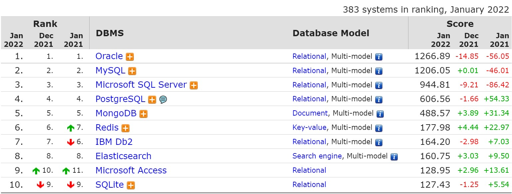
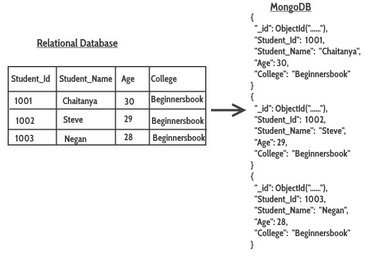

created by Novikau Mikalai
MongoDB is a source-available cross-platform document-oriented database program. Classified as a NoSQL database program, MongoDB uses JSON-like documents with optional schemas.
(Wikipedia)
NoSQL = Not only SQL
NoSQL DataBase
Key-Value
Redis
Dynamo
MemcacheDB
Voldemort
Document
MongoDB
CouchDB
Riak
Wide Column
BigTable
Cassandra
Hbase
Graph
Neo4j
InfiniteGraph
Why MongoDB?
Advantages of MongoDB
Most popular databases January 2022
Document
History MongoDB
MongoDB was founded in 2007 by Dwight Merriman, Eliot Horowitz and Kevin Ryan – the team behind DoubleClick.
At the Internet advertising company DoubleClick (now owned by Google), the team developed and used many custom data stores to work around the shortcomings of existing databases. The business served 400,000 ads per second, but often struggled with both scalability and agility. Frustrated, the team was inspired to create a database that tackled the challenges it faced at DoubleClick.This was when MongoDB was born.
What are the use cases for document databases?
- Single view or data hub
- Customer data management and personalization
- Internet of Things (IoT) and time-series data
- Product catalogs and content management
- Payment processing
- Mobile apps
- Mainframe offload
- Operational analytics
- Real-time analytics
How is MongoDB data stored?
MongoDB stores data in BSON (Binary JSON) documents.
BSON simply stands for “Binary JSON,” and that’s exactly what it was invented to be. BSON’s binary structure encodes type and length information, which allows it to be parsed much more quickly.
Comparison
JSON |
BSON |
|
|---|---|---|
| Encoding | UTF-8 String | Binary |
| Data Support | String, Boolean, Number, Array | String, Boolean, Number (Integer, Float, Long, Decimal128...), Array, Date, Raw Binary |
| Readability | Human and Machine | Machine Only |
Creator MongoDB: Steve Hoberman